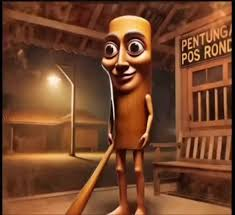
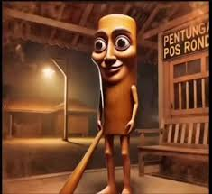

History is a great way to explore and learn from the past so that
we can avoid repeating past mistakes. It allows us to take what
previous people did wrong, and not redo it. Of course some people
don't listen to history so it is often forget, repeated, and sworn to
not be forgten again (which it does anyways)
You learn in it and it is a great source of deep thinking. Just as
the sworn enenimies of Leo Chimpan said, "You might destory
our books, but you won't destory our history."
there is totatly no hidden items on this page
 
